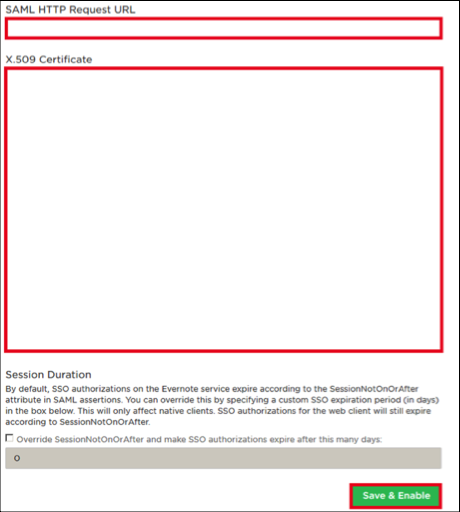
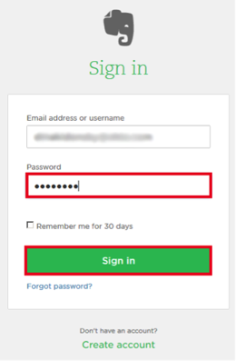
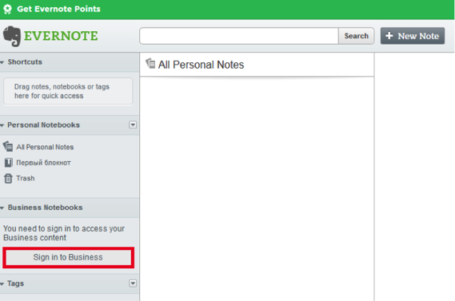

Login to Evernote as a user with administrative rights.
Open the Admin console.
Navigate to Security > Authentication.
Enter the following information (screen shot at end of step for reference):
SAML HTTP Request URL: Copy and paste the following:
Sign into the Okta Admin Dashboard to generate this variable.
X.509 Certificate: Copy and paste the following:
Sign into the Okta Admin Dashboard to generate this variable.

Done!
Notes:
SP-initiated flows, IdP-initiated flows, and Just In Time (JIT) provisioning are all supported.
For IdP-initiated flows:
Click on the Evernote Business chiclet in Okta.
Enter your Password.
Click the Sign in button.

For SP-initiated flows:
Login to your Evernote account.
Select Sign in to Business.
